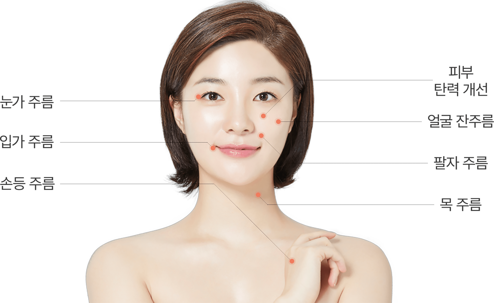
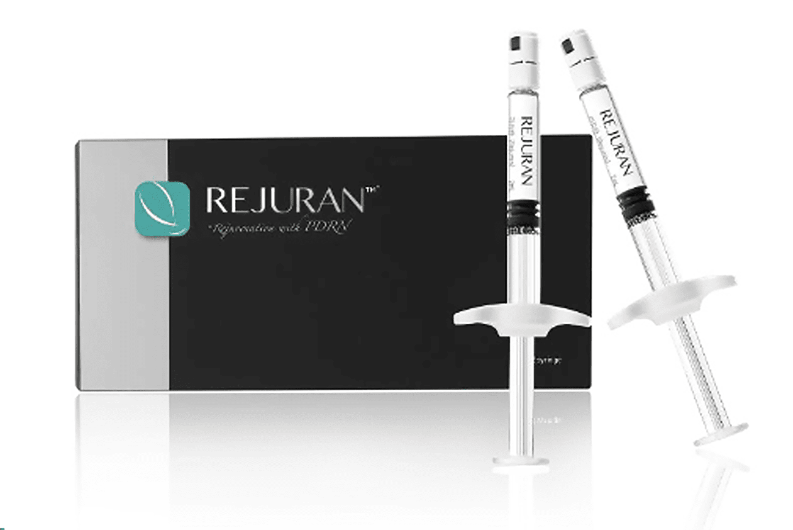
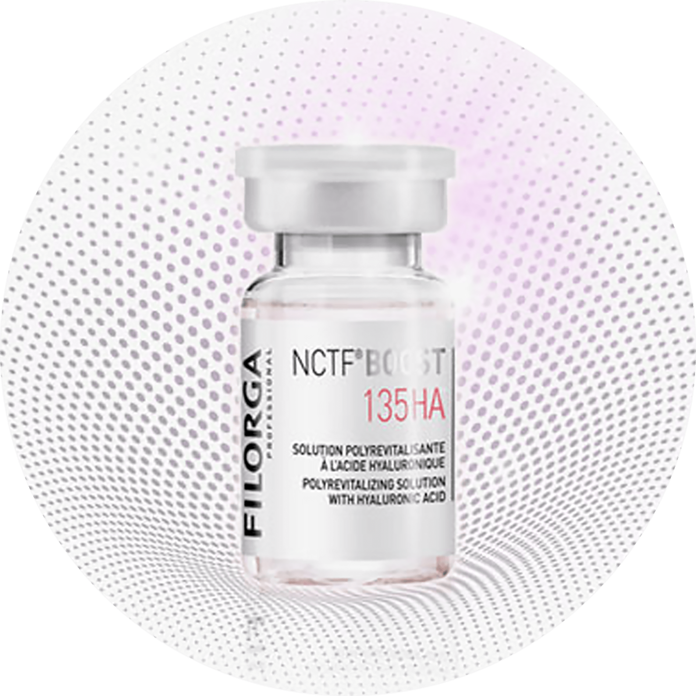
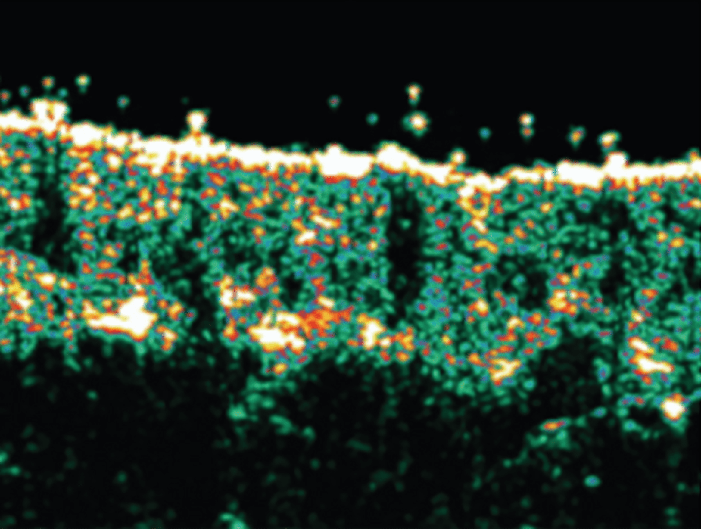
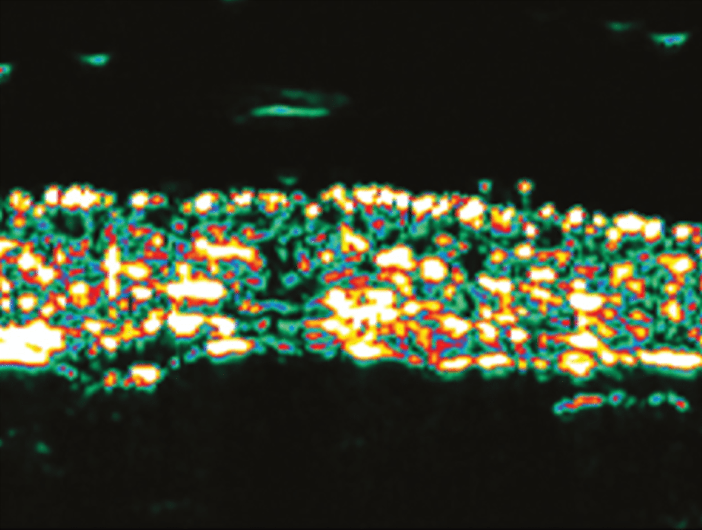

나를 위한 피부 클리닉
나를위한 산부인과의
“피부 클리닉”
은
의료진의 노하우와 기술력으로 여의사가 잘 아는
여자 피부에
대한 전문 지식에 섬세한 손길이 더해져 회복과 재생을 통해
젊은 날의 나를 찾아주는 프로그램입니다
- 시술시간 20분 내외
-
회복기간
시술 후
일상생활 가능 - 입원여부 없음
-
마취방법
마취크림 도포,
수면마취 가능 - 시술횟수 제한 없음
나를위한
피부 클리닉
리쥬란 힐러
리쥬란 힐러는 피부 속 진피층에서 생체 복합 물질을
직접 전달하는 시술로
연어 DNA에서 추출한 폴리뉴클레오티드를
주 성분으로 하는 시술로
이물 작용이 나타나지 않는 물질입니다.
그리고 노화, 자외선, 외부 자극으로
피부 속 환경을 개선하는데
도움을 주는 효과를 가지고 있습니다.
리쥬란 힐러 시술 부위

피부세포부터 재생시키는
리쥬란힐러

- 연어에서 추출
- 열에 비교적으로 강함
- 면역 반응이 나타나지 않음
- 높은 생체 적합성
- 체내에서 이물질 작용 최소화
리쥬란 힐러의 장점
- 탁월한 리프팅 효과
- 피부 치밀도와 탄력 증가
- 자연적인 각질 감소
- 유수분 밸런스 조정
- 잔주름을 개선하는 시술
- 피부 보호막 재생에 도움
- 피부톤 정화 효과
- 모공 축소 효과
리쥬란 힐러 대상자
-
전체적으로 주름을 개선 하고 싶은 분
-
뺨, 관자놀이, 아래턱 등 꺼진 부위를
채우고 싶은 분 -
눈가와 이마 주름으로 고민이신 분
-
주름 개선을 빠르게 하고 싶은 분
-
자연스럽게 즉각적인 효과를 원하시는 분
-
팔자 주름으로 신경 쓰이시는 분
나를위한
피부 클리닉
필로가 135
FILORGA MEDICAL NCTF BOOST® 135HA

프랑스 스킨부스트는 안티에이징 피부 재생 분야
전 세계 판매 1위에 빛나는
FILORGA LABORATORIES의
제품으로 35년간 세포 노화만을 연구한
세계 최고 권위의
안티에이징 연구기관에서 만든 스킨 바이탈라이저입니다.
바르는 필러로 유명한 필로가는 피부노화의 원인인
섬유아 세포의 기능을 되살려,
피부 색소 침착 및 주름과
피부 탄력의 활력을 되찾아주는 기능으로 유명합니다.
필로가 135의 특징
다양한 성분 조합으로 피부에 탄력을! 53가지 복합 성분들과 히알루론산의 최상의 조합 비율로 만들어진프랑스 스킨부스트 (NCTF BOOST 135HA)는 피부 노화에
결정적인 역할을 하는
섬유아 세포의 기능을 되살리는데
최적의 환경을 제공함으로써 색소 침착,
주름 및 탄력이
떨어진 피부에 활력을 되찾아 줍니다.
- 6가지 미네랄
- 23가지 아미노산
-
히알루론산
(HYALURONICAND) - 6가지 조효소
- 5가지 핵산
- 1가지 항산화제
- 12가지 비타민
- 53가지 복합 성분
진피의 밀도 및 두께를
확인하세요!
-
시술 전 피부 두께

-
시술 후 피부 두께 34.19% 증가

프랑스 스킨부스트 필로가를 시술 후, 피부 진피의 두께 및 밀도가
증가하였으며,
진피 내의 콜라겐(노란색 부분)의 양이
증가한 것을 보실 수 있습니다.
즉, 피부는 촘촘하게 밀도가 높아졌으며,
탄력있는 진피 본연의 상태를 되찾은 것입니다.
-
모공 축소
주름 개선 -
피부 톤 및
피부 탄력 개선 - 수분감 상승
-
피부 밀도 및
두께 증가
필로가 135 대상자
-
어두운 피부톤, 색소 질환 개선이 필요하신 분
-
건조한 피부에 강한 보습력을 주고 싶으신 분
-
피부 노화를 개선하고 싶으신 분
-
피부에 활력을 되찾고 싶으신 분
리쥬란 힐러, 필로가 135
시술 후 주의사항
시술 후 주의 사항은 개인 차가 있을 수 있습니다.
-
01
시술 부위에 약간의 멍이나 붓기, 가려움증이 동반될 수 있으나
자연스럽게 사라집니다. -
02
시술 후 과격한 세안은 조심해 주세요.
-
03
시술 후 너무 심한 저온, 고온에 노출되지 않도록 조심하셔야
합니다. -
04
시술 직후 사우나나 심한 운동은 7일 정도 삼가는 것이 좋습니다.
-
05
시술 부위가 하루 이상 통증이 지속되는 경우 병원으로 내원해
주세요.